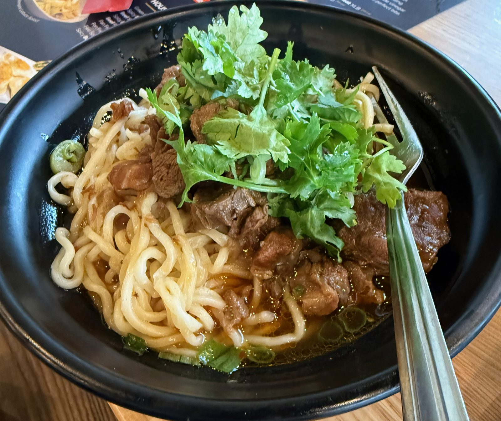
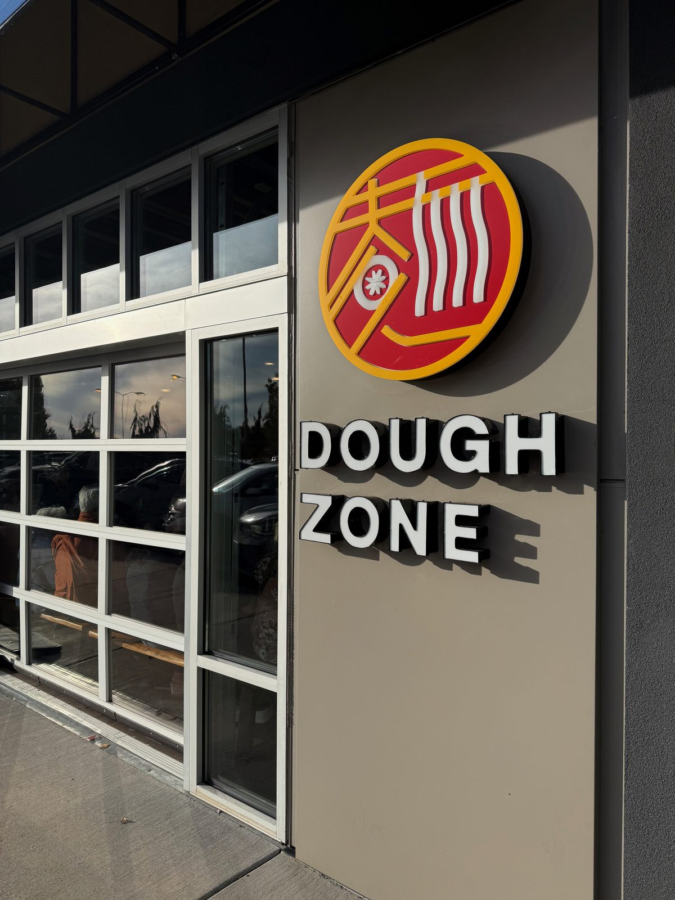
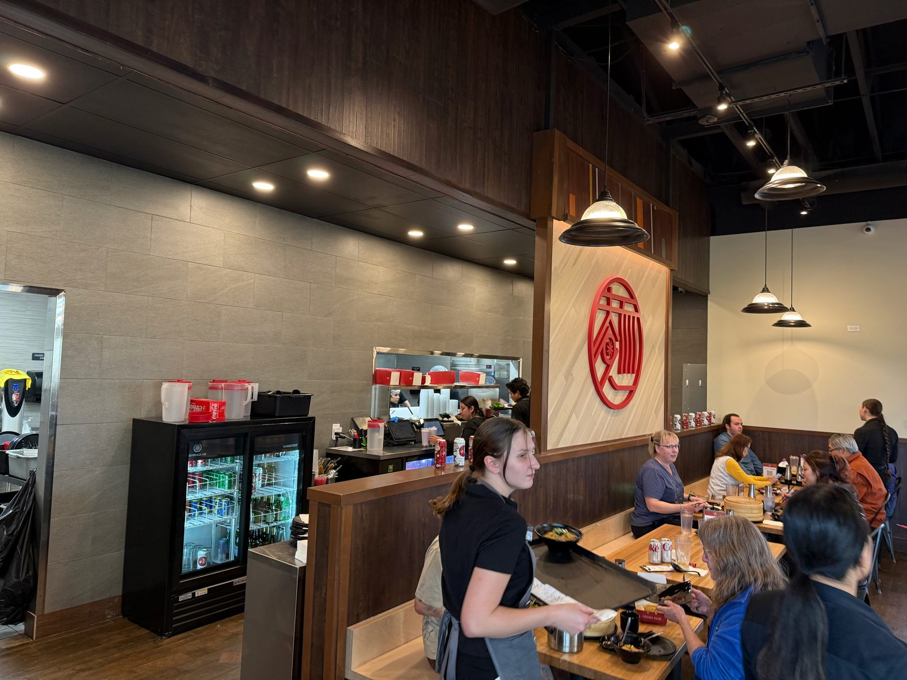
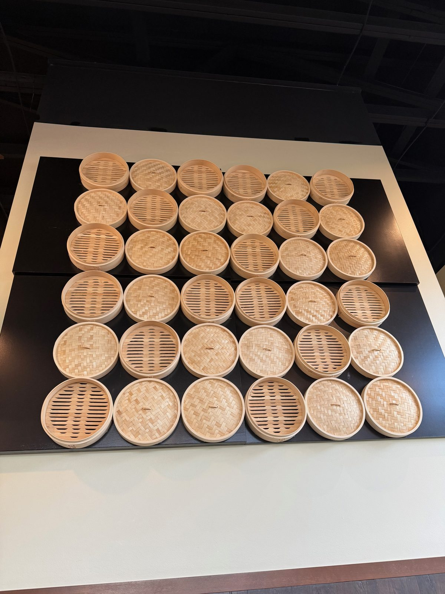
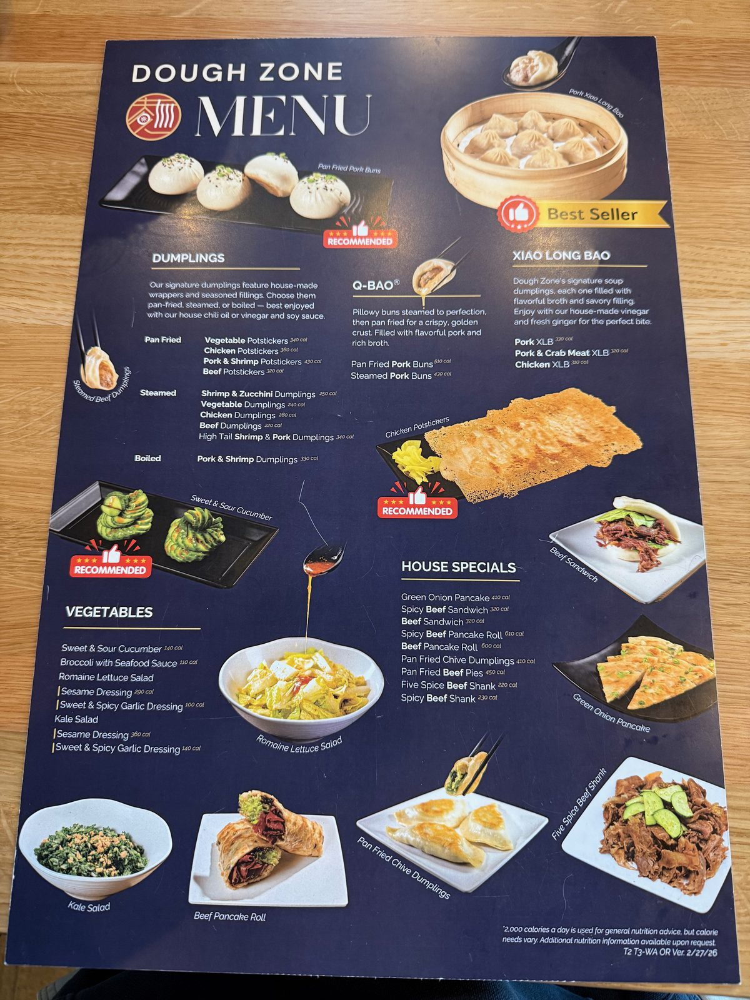
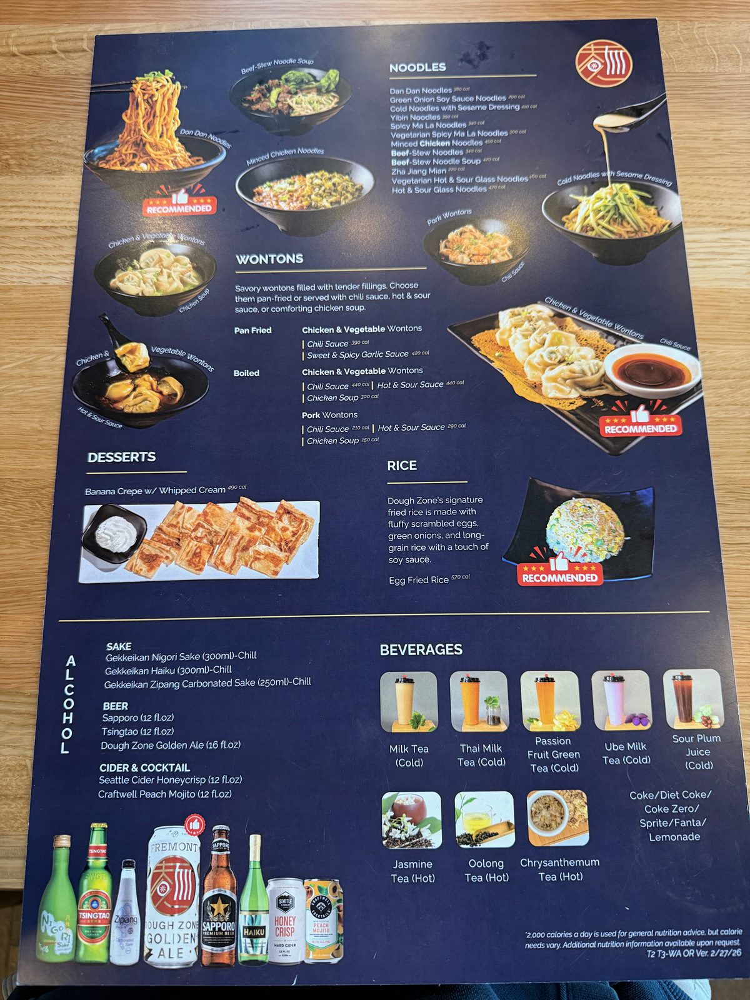
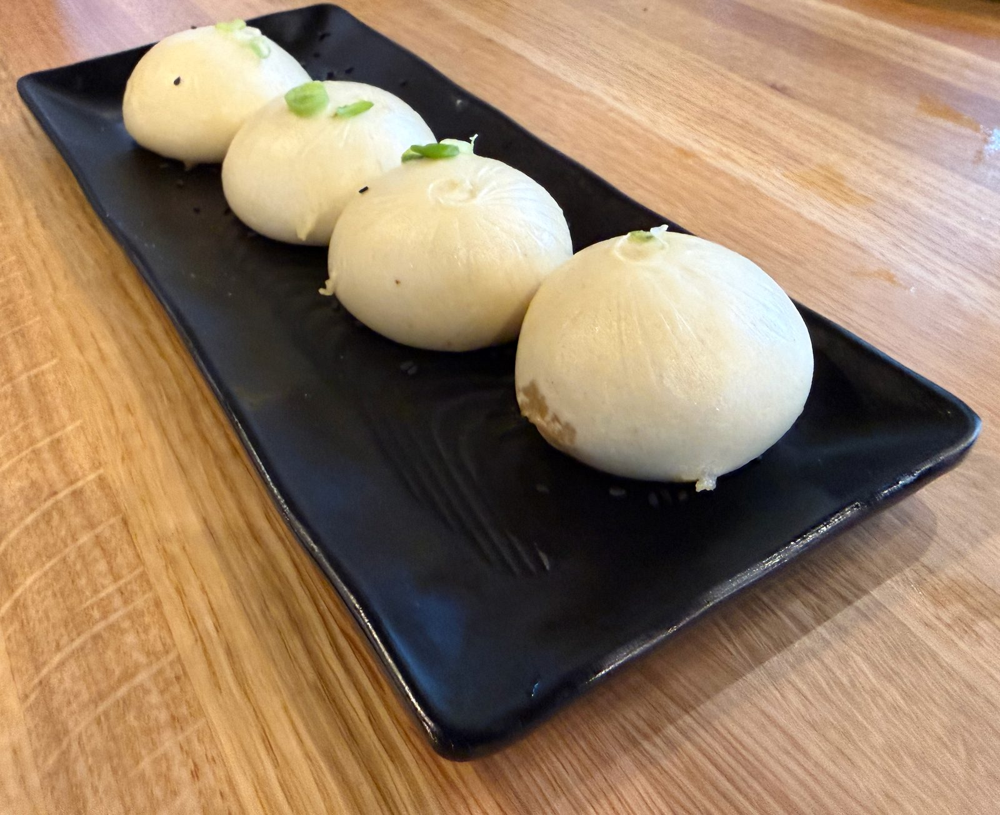

The Dan Dan Noodles at Dough Zone

Dinner was at Dough Zone, the dumpling chain's outpost on Mill Plain in Vancouver, Washington — and the dish that won the night wasn't one of the dumplings at all. It was the Dan Dan noodles, pictured above, and they're good enough that I'd put them ahead of Din Tai Fung, which had been my favorite in this genre until last night. Everything else that came to the table was excellent too. This is a five out of five, and the Dan Dan noodles alone are worth the trip.

Inside the dining room
It was a full house on a weekend evening — every booth working, servers moving trays of steamer baskets past each other, the open kitchen visible behind the counter. One whole accent wall is built out of real bamboo steamer baskets, stacked dozens deep, which does a better job of telling you what kind of restaurant this is than any sign could.


What's on the menu at Dough Zone
The menu is a big laminated board dropped right on the table — dumplings, xiao long bao, wontons, noodles, rice, and a short beverage list heavy on milk teas. It's a lot of ground to cover on a first visit.


Ordering runs through a QR code propped on the table next to the vinegar and soy sauce dispensers — scan it, and it pulls up the full menu on your own phone.
The rest of the table
The xiao long bao — the soup dumplings, and the menu's marked "Best Seller" for a reason — came out in a proper bamboo steamer, pleated tight at the top the way they're supposed to be. The steamed pork buns, the pillowy white Q-Bao style rather than the pan-fried version, were just as good. Everything that landed on the table last night earned its place there.

Dough Zone's signature soup dumplings, each one filled with flavorful broth and savory filling. Enjoy with our house-made vinegar and fresh ginger for the perfect bite. — from the menu board
But the noodles were the standout. It's easy to walk into a dumpling house and order only dumplings, and last night's whole lesson was: don't skip the noodle section. If your table only orders one thing here, this is the one — the same claim I made a couple of months ago about the chashu at Ramen Ryoma, and this one has earned the same kind of write-up.
The practical bit
Dough Zone — 11909 SE Mill Plain Blvd, Ste 200, Vancouver, Washington 98684. 📍 Get directions
Phone: (360) 828-5450.
Hours: daily, 11 a.m. to 10 p.m.
Worth knowing: this is a chain — Dough Zone started in Bellevue and has since spread across Washington, Oregon, California, and Texas — but the Mill Plain location was busy for good reason. Order the Dan Dan noodles no matter what else you get.